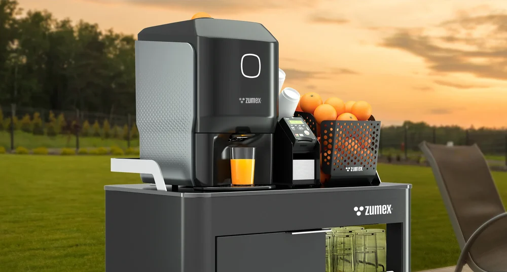
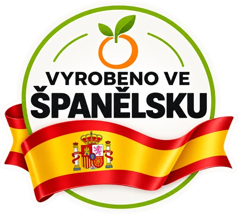
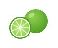
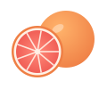
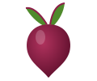
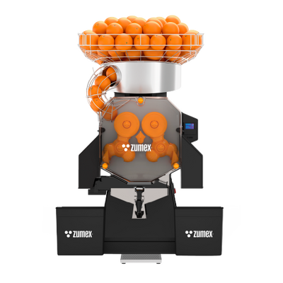

Profesionální lisy na citrusy Zumex pro kavárny, hotely a obchody
Proměňte čerstvé ovoce v zážitek, za kterým se zákazníci vracejí. Najdeme správný stroj pro vaši kavárnu, hotel i obchod.



 Pomeranče
Pomeranče Mandarinky
Mandarinky Citrony
Citrony
Limetky
Grapefruity Granátová jablkaAnanasJablka
Granátová jablkaAnanasJablka MrkevZázvorOkurky a celer
MrkevZázvorOkurky a celer
Červená řepaProč si vybrat Zumex
Od kompaktního Conical System® až po automatizované čištění Zitrux. Technologie Zumex zjednoduší přípravu šťávy i každodenní péči o stroj.
Technologie pro chuť
Od kompaktního lisu po výrobu šťáv. Šťáva bez hořkosti.
Stroj pro váš provoz
Výběr podle prostoru, spotřeby a způsobu obsluhy.
Servis z Prahy
Opravy a originální náhradní díly pro ČR i Slovensko.
Záruka 2 roky
Mezinárodní záruka výrobce na zařízení Zumex.
Nejoblíbenější lisy na citrusy
Vyberte podle místa na baru, denní spotřeby a toho, jestli chcete, aby si zákazníci točili šťávu sami.

Soul Series 2
Soul Series 2 přináší automatické lisování citrusů i na bar, kde je každý centimetr důležitý.
- Výkon M/S18 plodů/min
- Výkon XS36 limetek/min
Versatile
Versatile spojuje automatické podávání citrusů s větší autonomií než ručně doplňované stolní lisy.
- Výkon Basic / Pro22 plodů/min
- Zásobník Pro16 kg

Speed Up
Speed Up je určen pro intenzivní výdej čerstvé šťávy v obchodech, velkých bufetech a vytížených gastroprovozech.
- Výkon40 plodů/min
- Zásobník20 kg

Zitrux Compact
Zitrux Compact přináší samočisticí technologii do menšího prodejního prostoru.
- VýkonAž 40 plodů/min
- Nepřetržité zpracováníAž 30 kg ovoce
Najděte stroj podle svého provozu
Kavárna potřebuje jiný lis než supermarket nebo výrobna. Vyberte, kde budete šťávu podávat.
Soul Series 2
Malý prostorem. Velký zážitkem.
18 plodů/min
Minex
Velká čerstvost pro malé podniky.
13 pomerančů/min
Essential
Každodenní spolehlivost.
Essential ProVersatile
Když čerstvost nabere tempo.
22 plodů/minZitrux Compact
Více možností na menší ploše.
Až 40 plodů/min
Zitrux
Čerstvá šťáva. Čistá autonomie.
75 kgSpeed Up
Výkon pro vaši největší špičku.
40 plodů/min
Speed S+plus
Samoobsluha ve velkém stylu.
40 plodů/min


Šťáva z lisů Zumex nepřijde do kontaktu se slupkou, proto zůstává sladká a bez hořkosti od první do poslední sklenice.
Servis a náhradní díly řešíme z Prahy
Jako autorizovaný zástupce zajišťujeme opravy a dodávky náhradních dílů pro zařízení Zumex v České republice i na Slovensku.
Mezinárodní záruka 2 roky
Rozsah záruky a její uplatnění se řídí podmínkami výrobce pro konkrétní zařízení. Připravte si doklad o nákupu a výrobní číslo, s dalším postupem vám pomůže náš servis.
Záruční podmínky výrobceOriginální náhradní díly
Pomůžeme určit správný originální díl pro váš model. Pošlete nám označení stroje, výrobní číslo a ideálně fotografii potřebného dílu.
Poptat náhradní dílRegistrace produktu
Zaregistrujte svůj přístroj a mějte údaje o něm po ruce pro servisní komunikaci. Záruční podmínky se mohou lišit podle modelu.
Přejít na registraci produktuTechnická podpora ZumexService
Potřebujete poradit s obsluhou, čištěním nebo závadou? Napište model a stručný popis potíží. Domluvíme s vámi další postup.
servis@karmeb.comNevíte, který lis se hodí do vašeho provozu?
Napište nám, kolik šťávy denně připravujete a kolik máte místa. Doporučíme konkrétní model a konfiguraci.
Kontakt na KARMEB spol. s r.o.
Autorizovaný zástupce Zumex pro Českou republiku a Slovensko.